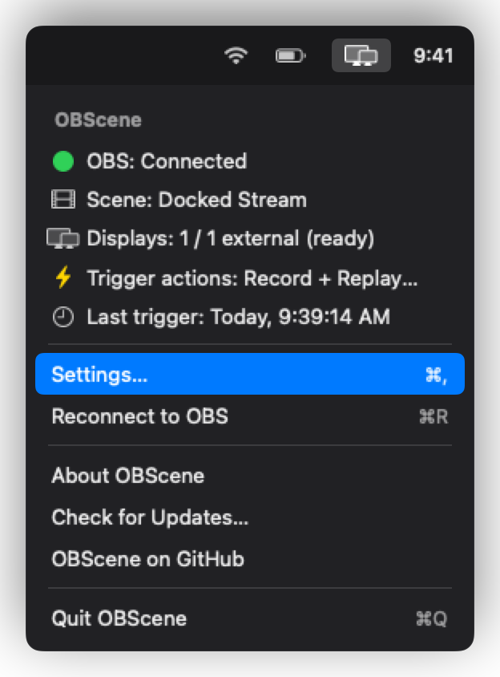
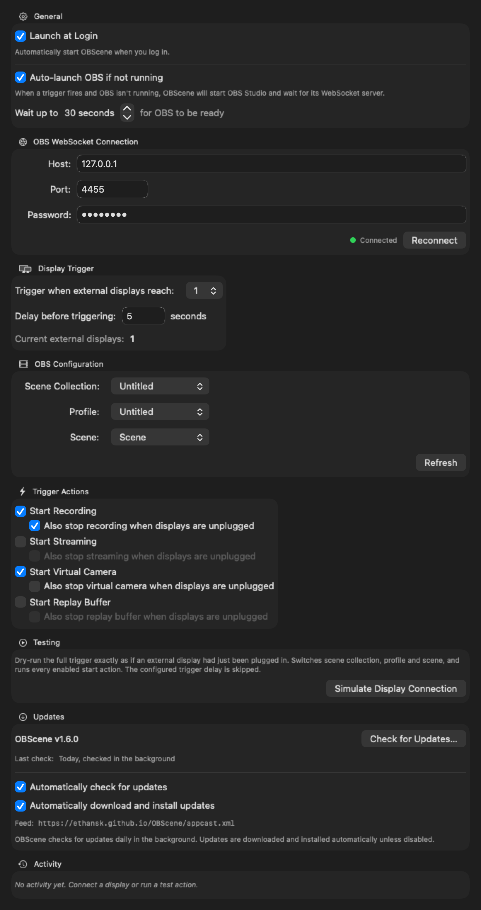

Dock in. OBS takes care of itself.
OBScene is a tiny macOS menu bar app that watches your external displays. When you plug in, it switches your OBS scene collection, profile, and scene — and optionally starts recording, streaming, the virtual camera, or the replay buffer. Unplug and it cleans up just as quietly.
Latest release · Universal (Apple Silicon + Intel) · macOS 13+ · MIT licensed.


Everything you need. Nothing you don’t.
Automatic display detection
Uses CoreGraphics display-reconfiguration callbacks to react in real time when monitors are plugged in or yanked out.
Threshold & debounce
Set how many displays must be connected and a delay before firing, so OBS has time to settle after a hot-plug.
Scene switching
Switch your OBS scene collection, profile, and active scene in one step. Leave any of them on (Don’t change) to skip.
Four trigger actions
Independently toggle Recording, Streaming, Virtual Camera, and Replay Buffer. Pick any combination.
Stop on unplug
Optionally stop any of the four actions the moment you disconnect. Perfect for “record while docked, stop when I pack up.”
OBS WebSocket v5
Talks to the WebSocket server built into OBS Studio 28+. No extra plugins, no bundled server, no flaky bridges.
Local & native
Pure Swift + SwiftUI menu bar app. No Electron, no telemetry, no cloud. Settings live in UserDefaults.
Launch at login
Backed by modern SMAppService. Toggle once and OBScene is ready every time you sit down.
Four steps, then it’s invisible.
-
1
Enable OBS WebSocket
In OBS Studio, open Tools → WebSocket Server Settings, enable the server, and set a password.
-
2
Connect OBScene
Open OBScene’s settings from the menu bar icon. Paste the host, port, and password. Hit Connect.
-
3
Pick your targets & actions
Choose a scene collection / profile / scene to switch to, then toggle any combination of Record, Stream, Virtual Cam, and Replay Buffer.
-
4
Dock and forget
OBScene watches your displays. When you hit the threshold, it waits the debounce delay, then tells OBS what to do. When you unplug, it can tear everything down cleanly.
Drop it in Applications and forget about it.
Latest release · Universal build (Apple Silicon + Intel) · Requires macOS 13 Ventura or later and OBS Studio 28+.